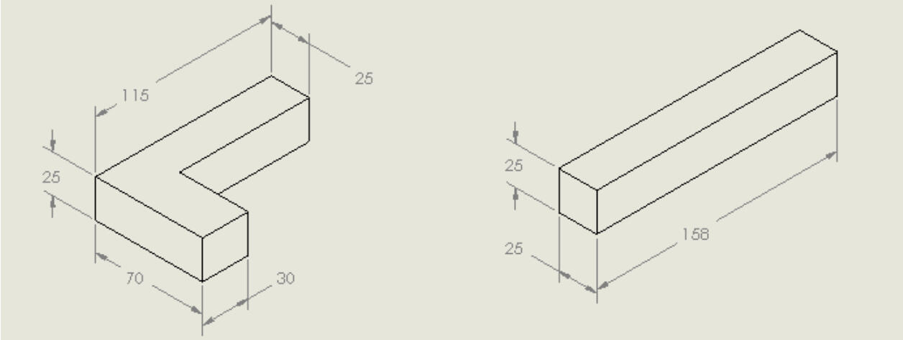
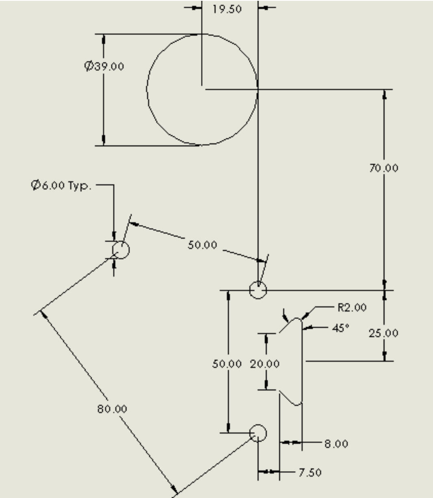
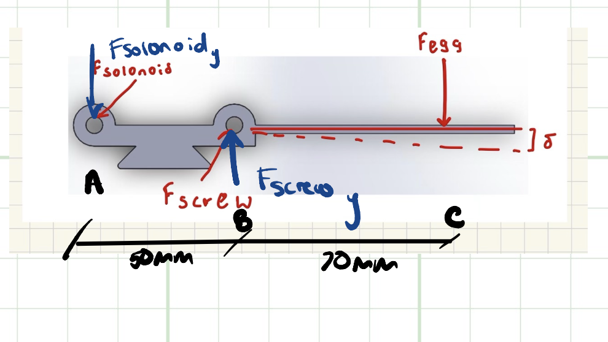
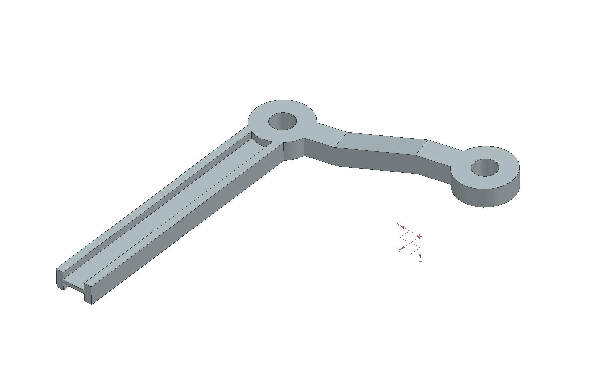
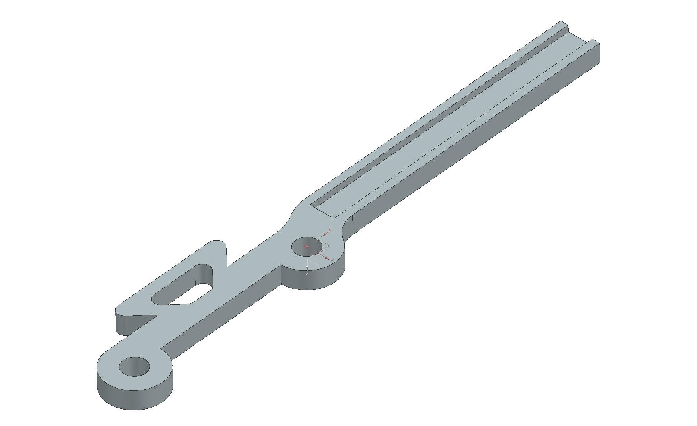
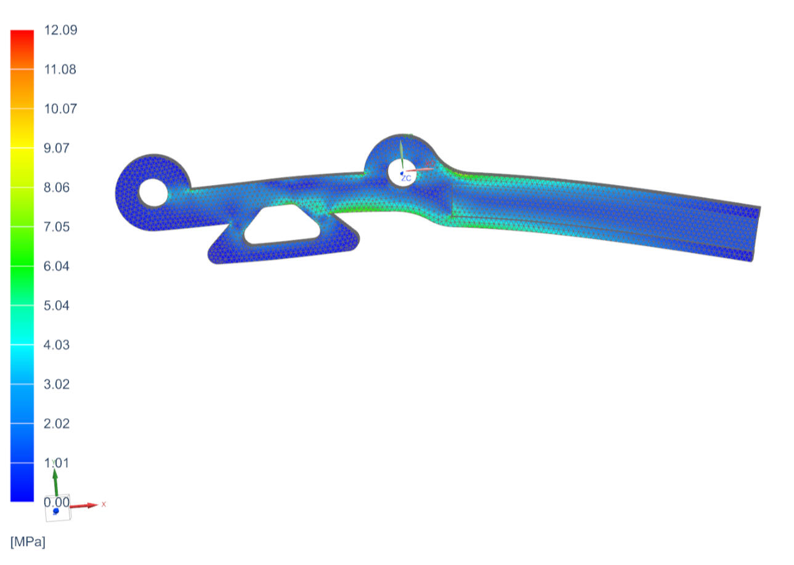
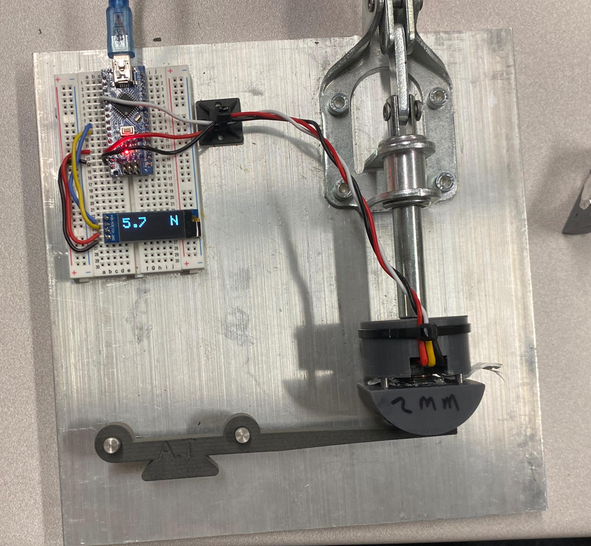
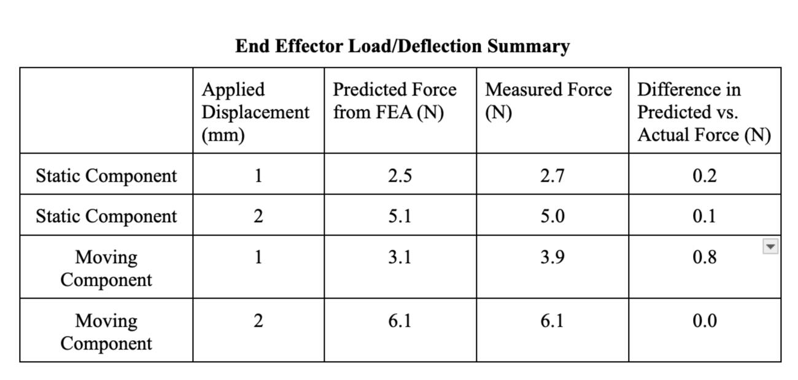

Skills: Factor of Safety Analysis, FEA, CAD, Mechanics of Materials, Prototyping, Experimental Validation
Project Overview
For the ME 240 final, I designed and validated an end effector to relocate an egg safely—applying enough force for motion, but not enough to cause breakage. The challenge required integration of statics, FEA, and physical testing, all while minimizing weight and ensuring mechanical reliability.
Design Requirements & Approach
Force constraint: Exert 2–9 N on the egg (safe, non-destructive)
Geometric constraints: Provided by assignment—drove CAD and layout choices
Weight: Minimize for easy robot maneuverability (final: 122 g, 14 g less than first iteration)


Geometric constraints for the design - necesarry to avoid self collision with the robot and to interface well
Factor of Safety & Mechanics Analysis
Material: Nylon-12 (E = 1850 MPa, Ys = 50 MPa)
Used cantilever beam theory to ensure max stress/ deflection stay well below safe thresholds
Force distribution and reaction calculated via free body diagrams and static analysis

Free Body Diagram of the static component
Iterative Design
Dynamic component:
Key innovation: I-beam cross-section on each action arm—maximizes material efficiency by putting mass far from the neutral axis, boosting moment of inertia and reducing deflection under load.
Static component:
Designed for simple, robust dovetail robot interface and easy actuation.


Final CAD assemblies: dynamic (left), static (right)
FEA & Physical Testing
FEA with applied loads confirmed safety: Max Von Mises stress ≈ 6.04 MPa (<15% of Nylon-12 yield strength)
Physical deflection test: used force sensor and displacement gauge to measure force needed for 1 mm and 2 mm tip deflection
Results closely matched simulations, validating mechanical model



FEA stress cloud static (left), physical testing rig d (right), and comparison with actual testing results (bottom)
Project Outcome
Successfully moved an egg multiple times without cracking; design stayed within all mechanical and force constraints.
Weight reduction achieved by iterative redesign, mainly through material-efficient I-beam arms and optimized fastener selection.
Reflection
This project brought theory into practice—applying statics, mechanics of materials, and simulation to real engineering design. The process of iterating, validating against FEA and experiment, and achieving a practical outcome was a capstone to my sophomore coursework in mechanical engineering.